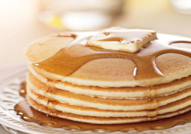

Pancakes

Ingrédients
- 250g de farine
- 1 sachet de levure chimique
- 1 pincée de sel
- 2 oeufs
- 50g de sucre
- 25cl de lait
- 50g de beurre fondu
Préparation
- Mélanger la farine, la levure et le sel dans un saladier.
- Dans un autre saladier, battre les oeufs avec le sucre.
- Ajouter le lait et le beurre fondu.
- Verser le mélange liquide dans le mélange sec et mélanger jusqu'à obtenir une pâte homogène.
- Faire chauffer une poêle à feu moyen et y verser une louche de pâte.
- Laisser cuire 2 minutes de chaque côté.